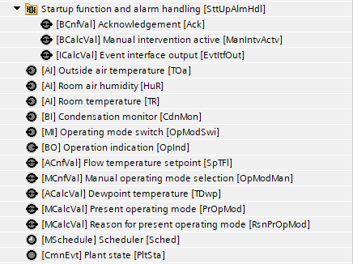
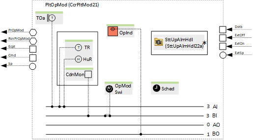
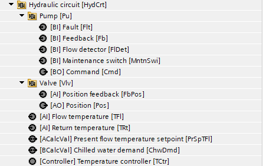
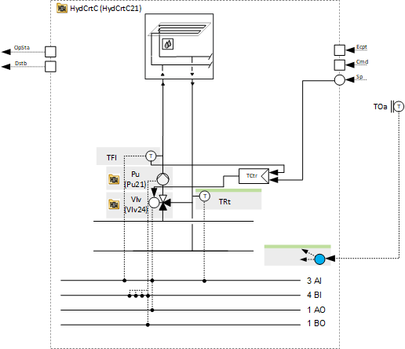

[Ccr21x] Cooling circuit, precontrol, dewpoint compensated flow temperature control
Name: [Ccr21x] Cooling circuit, precontrol, dewpoint compensated flow temperature control (all options)
Library hierarchy: Plants
Plant operating modes
- Off
- On
Plant diagram

Main functions | Main components |
|---|---|
|
|
Program blocks
Plant operating mode | |
[CcrPltMod21] Plant operating mode determination for cooling circuit, for precontrol | |
 |  |
Hydraulic circuit | |
[HydCrtC21] Hydraulic circuit for cooling, flow temperature control | |
 |  |
Supply chain for chilled water (Optional) | |
|
|